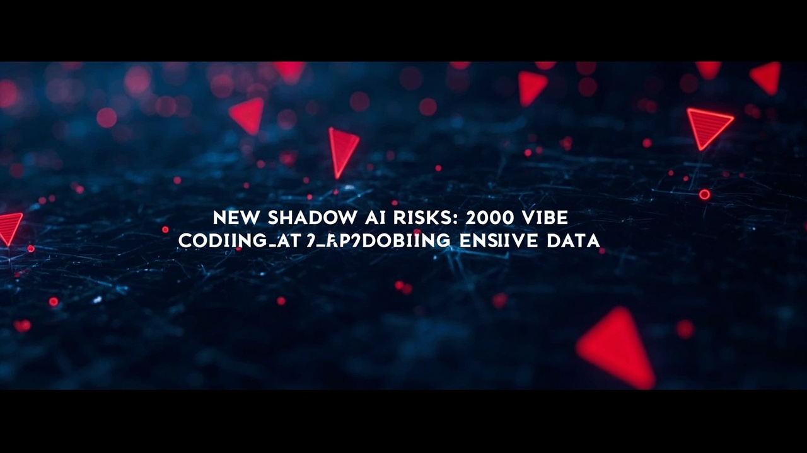

Red Access 研究：38萬公開網路資產、5千企業用途工具、40%未設驗證機制

Red Access 在主流 AI 開發平臺發現超過 38 萬個可公開存取的網路資產
當中約 5,000 個看似用於企業用途，員工自行建立並連接到正式生產系統
40% 企業用途工具（約 2,000 個）含有敏感資料但未設置基本身分驗證機制
部分應用甚至預設讓任何能開啟頁面的人獲得管理者權限，任何人即可存取
資安業者 Red Access 研究發現，員工透過 AI 驅動開發平臺自行建立的應用程式已成為新型影子 AI 風險。這些由非技術員工自行搭建的應用程式，往往在未經 IT 或資安團隊審查的情況下直接發布到公開網路，並常見缺乏基本的身分驗證與存取控制，導致企業敏感資料暴露。目前已發現約 2,000 個企業用途工具暴露敏感資料，遍及六大洲所有行業。
Vibe Coding 是指透過 AI 驅動的開發平臺，讓任何人都能以自然語言描述需求，快速建立可運作的應用程式。這個模式將過往需要工程團隊數月才能完成的開發工作，壓縮成任何非技術員工在午餐前就能發布產品的體驗。
行銷人員建立活動追蹤器並串接 BI 系統；營運經理建立廠商入料錶單並連接到工單系統；財務團隊在週五前建立簡報用的數據儀錶板——這些應用通常直接發布到公開互聯網，存取控制取決於建立者當時的設定，往往完全沒有。
| 風險項目 | 具體發現 |
|---|---|
| 公開網路資產 | 38 萬+ 個可公開存取的 web assets |
| 企業用途工具 | 約 5,000 個，明顯用於企業業務 |
| 敏感資料暴露 | 2,000 個（40%）含有敏感資料 |
| 驗證機制缺失 | 未設置基本身分驗證與存取控制 |
| 預設權限問題 | 部分應用預設給予任何人管理者權限 |
| 影響範圍 | 六大洲、所有行業 |
| 攻擊前提 | 無需任何漏洞利用，公開即可存取 |
這類 Shadow Builders 風險為何在成熟資安架構下仍被忽略？研究指出，現有資安工具存在根本性盲點：
Red Access 建議企業採用四步驟方法：
傳統影子 AI 是員工將敏感資料貼進 AI 聊天工具；新型影子 AI 則是員工建立完整應用、連接到正式生產系統、並發布到公開互聯網——在 IT 和資安團隊完全不知情的狀況下。
這已非傳統意義的 Shadow IT。Shadow IT 的邊界是確定的——團隊瞞著公司購買協作工具，資料存在於未批准的 SaaS 供應商，但至少身份、稽覈日誌和治理介面仍然存在。Shadow Builders 則完全逆轉：應用是自訂的、資料是自訂載入的、串接是直接連接到正式系統的記錄，而產出物往往發布在公開互聯網上。
「這些人並非惡意。他們是能幹的員工，用比組織能跟上的速度更快地解決實際問題——做的事情正是平臺邀請他們做的。」
— Red Access 研究報告💡 覈心問題：企業的稽覈能夠通過，但這些暴露在開放網路上的應用仍在被即時利用。緩解不是技術購買，而是建立治理機制——詢問員工、映射連接、建立規範路徑、持續監控。